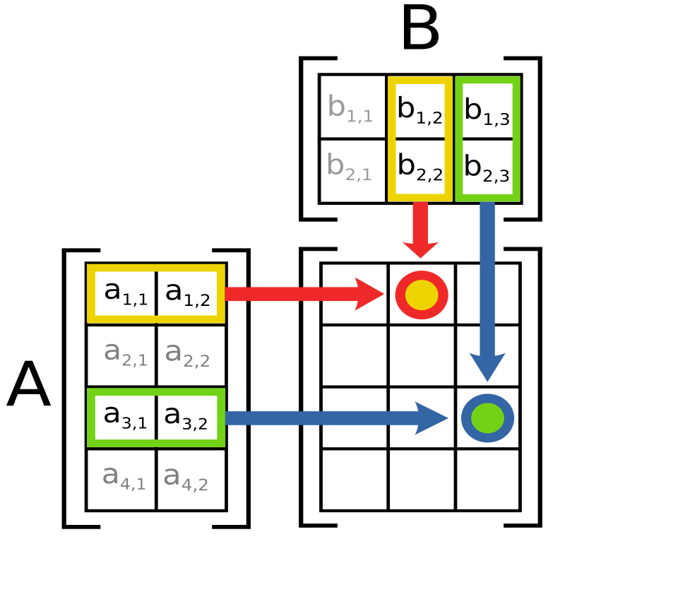
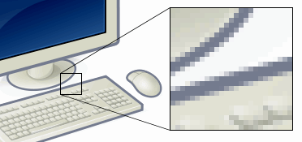

[ 2 3 ] + [ 5 1 ] = [ 7 4 ] [ 1 4 ] [ 0 2 ] [ 1 6 ]
row [ 1 2 ] meets column [ 3 ; 1 ]: 1×3 + 2×1 = 5
Those two lines are matrix math in action. A matrix (say it: MAY-tricks) is just a grid of numbers — rows across, columns down — like a scoreboard or a spreadsheet. The first line adds two grids square by square. The second shows the heartbeat of matrix multiplication: a row pairs with a column, you multiply the partners, then add. The plural of matrix is matrices (MAY-tri-sees) — and once you can handle two or three of them at once, you can do things that feel like magic.
Why do people care? Because the world runs on grids of numbers! Every photo on your phone is a grid of pixel numbers. Every 3D video game spins and flips its world by multiplying matrices — millions of times per second. Music recommendations, weather forecasts, search engines, and the giant AI models that write poems all run on enormous versions of the little 2 × 2 grids you'll master today. Matrices are how computers think about tables of numbers — and tables of numbers are everywhere.
You already know how to add and multiply single numbers — so we'll spend zero time relearning that and go straight to grids.
In this lesson, you will:
- 1.Meet the matrix — rows, columns, sizes, and every square's address
- 2.Add and subtract grids square by square (and learn the same-size rule)
- 3.Scale a whole grid with one number — even a fraction like 1/2
- 4.Learn real matrix multiplication: row × column, pair them up and add
- 5.Discover that order matters — A × B is usually NOT B × A
- 6.Meet the zero grid and the identity grid — the 0 and 1 of matrix world
- 7.Use matrices for real: scoreboards, brightened photos, secret codes, flipped points
- 8.Learn the common mistakes so you never make them
- 9.Practice with 100 problems at the end!
How to use this lesson: Read the sections in order. Each section starts with the key idea you'll learn in it. Take your time, and try every "Your Turn" box with a pencil and paper. Ready? Let's go!
📸 Pictures

How matrix multiplication works: each row of matrix A meets a column of matrix B to make one square in the answer. See source ↓

Zoom in on any computer picture and you'll see it's really a grid of tiny squares called pixels: a giant matrix of numbers! See source ↓
🗺️ Your lesson map
Meet the Matrix — Rows, Columns, Addresses 🧩Lesson 2
Adding and Subtracting — Square by Square 🎯Lesson 3
The Scalar — One Number Times a Whole Grid 🔍Lesson 4
The Real Matrix Multiplication — Row × Column ⚡Lesson 5
Order Matters! A × B ≠ B × A 🌟Lesson 6
Special Grids — The Zero Grid and the Identity Grid 🛠️Lesson 7
Matrices at Work — Scores, Photos, Codes, and Flips ⚠️Lesson 8
Watch Out! Common Mistakes 🧠Lesson 9
Review — The Big Picture 🏋️Practice Problems
100 problems to try 🏆Quiz
Test yourself: new questions every time!
📚 Picture Sources
- Picture 1 · Matrix multiplication diagram 2. By Lakeworks. CC BY-SA 3.0. From Wikimedia Commons: https://commons.wikimedia.org/wiki/File:Matrix_multiplication_diagram_2.svg
- Picture 2 · Pixel-example. By ed g2s. CC BY-SA 3.0. From Wikimedia Commons: https://commons.wikimedia.org/wiki/File:Pixel-example.png